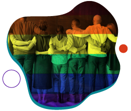
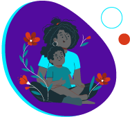
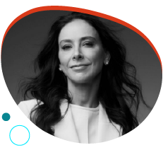
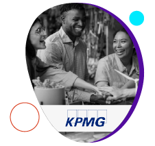
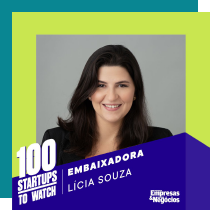

Não queremos ir para o spam! =) selecione este email como
“confiável” ou mova-o para a Caixa de Entrada.
Brasil despenca em ranking de igualdade de gênero e ocupa
70º lugar
Ainda estamos a 134 anos de alcançar a igualdade de gênero,
diz o Fórum Econômico Mundial. A Islândia lidera o ranking
há 15 anos, enquanto o Brasil caiu para a 70ª posição. A
participação feminina na política é um dos maiores desafios.
Segundo o Índice Global de Disparidade de Gênero 2024, o
progresso global foi de apenas 0,1 ponto percentual desde o
ano passado.
A Islândia é a única economia a ter eliminado mais de 90% da
disparidade de gênero. Entre os 10 países no topo, 8
fecharam mais de 80% do gap. No Brasil, a igualdade
econômica caiu levemente para 66,7%, mas houve progresso em
cargos de liderança sênior, com 66,1%.
A participação feminina na força de trabalho subiu para
72,6%, mas ainda está abaixo do melhor resultado do país. Em
termos educacionais, o Brasil alcançou 99,6% de paridade. No
entanto, a representatividade feminina na política, com 22%,
está abaixo da média global. Economias europeias dominam as
primeiras posições, destacando-se a Finlândia e a
Noruega.
Está aproveitando a leitura?
Que tal compartilhar essa edição da WE Impact News com
outras empreendedoras e empreendedores da sua rede de
contatos? 😉
#WIN – WE Impact Network
Inclusão de pessoas LGBTQIAP+: cases de corporações da
WE Impact Network para se inspirar

De acordo com dados da InfoJobs, 95% dos profissionais
LGBTQIAP+ ainda enfrentam preconceito velado nas empresas.
Além disso, 82% afirmam nunca ter trabalhado em lugares com
programas específicos de diversidade e inclusão.
Todo dia é uma oportunidade para a transformação, mas que
tal aproveitar o mês do orgulho para impulsionar essa pauta
na sua empresa?
As corporações da WE Impact Network – Microsoft, KPMG,
Suzano, Porto, Flex e Grupo Sabin – estão aqui para ajudar.
Em nosso novo artigo, elas compartilham dicas, boas práticas
e cases de sucesso para promover os direitos, empoderamento
e inclusão de profissionais LGBTQIAP+.
#DiversidadenaPrática
Plataforma apoia mães negras no mercado de trabalho

A startup de impacto social Mães Negras, fundada por Thais
Lopes, oferece serviços como grupos de conversas, rodas de
escuta, mentorias e workshops para apoiar mães negras no
mercado de trabalho. Entre os temas abordados estão
carreira, maternidade, gestão financeira, saúde mental e
planejamento de negócios.
A iniciativa começou em fevereiro de 2023 como uma
comunidade e inseriu uma frente B2B para atender
organizações que queiram contratar suas integrantes para
palestras, workshops e oficinas. A ideia da empreendedora é
fortalecer essa frente B2B.
Saiba mais sobre a startup e sobre a trajetória de
Thais.
#DicadaCEO

“Estando em um cargo de liderança, visualizo que ser mulher
é sinônimo de potência. Tenho um olhar diferenciado por ser
mulher e mãe e posso afirmar que muitos projetos foram
realizados justamente por isso”
- Ana Oliva Bologna, Mãe, esposa, empresária e triatleta.
#ElasImpactam
Metade das empreendedoras do RJ é principal fonte de renda
da família
Quase metade (47,9%) das empreendedoras do RJ é a principal
fonte de renda da família. A pesquisa feita pela Secretaria
de Estado da Mulher, realizada com 1,7 mil mulheres, aponta
que 48% dos negócios comandados por elas não têm CNPJ e que
apenas 13% empregam outras pessoas.
Os dados demonstram ainda que 60% se declararam negras, 72%
têm 40 anos ou mais, 77% têm filhos e 46% afirmaram estar
casadas e serem a principal ou única fonte de renda da
família.
Esses números destacam a importância das empreendedoras como
pilares econômicos e sociais em suas comunidades.
#EmpresasQueTransformam

Relatório de Sustentabilidade da KPMG no Brasil
Descubra como a KPMG Brasil, nossa parceira e investidora,
está moldando um futuro sustentável no Relatório de
Sustentabilidade 2023. Confira algumas ações da corporação
nas esferas:
Governança:
39% dos cargos de liderança ocupados por
mulheres.
75% dos profissionais concluíram o treinamento
anticorrupção antecipadamente.
Pessoas:
49% homens e 51% mulheres na equipe.
R$ 17,1 milhões investidos em aprendizagem, com
mais de 508 mil horas de treinamento.
Planeta:
100% da eletricidade dos escritórios vem de fontes
renováveis.
51,7% de aumento na demanda por serviços de
sustentabilidade.
Iniciativa voluntária de Preço Interno do
Carbono.
Saiba mais sobre essas e outras ações no relatório
completo.
#NaMídia

Por mais um ano, nossa CEO é embaixadora da 100 Startups
to Watch
O 100 STW seleciona as melhores startups, levando em
consideração o grau de inovação, potencial de mercado,
modelo de negócio, equipe e maturidade da solução.
A diversidade também é um fator de peso na seleção: entre as
200 finalistas, pelo menos 100 empresas terão 50% ou mais do
seu quadro societário composto por pessoas que se declaram
pretas, pardas, amarelas ou indígenas; do sexo feminino;
LGBTQIAP+; ou pessoas com deficiência.
Inscreva sua startup até o dia 15 de julho pelo site!
#NasRedes
Perdeu esse conteúdo?
Após um período desafiador para o venture capital, temos
novos dados sobre o primeiro trimestre de 2024 na América
Latina! Confira nosso último post para saber mais sobre esse
cenário.